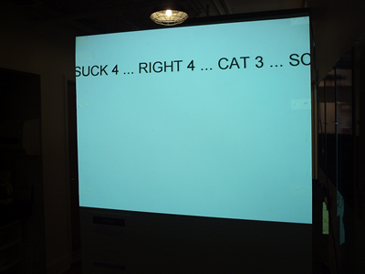
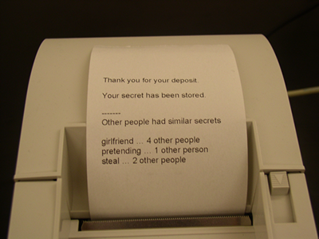
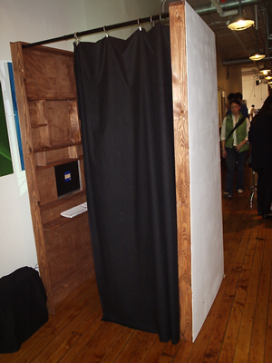
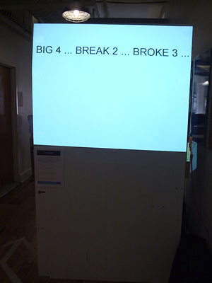

An installation which asks visitors to anonymously enter personal secrets, the Data Booth seeks to engage people with a database as a storage medium for intimate, non-quantitative information.

Abstract
Can all the details of our lives be catalogued and stored in databases? How might less quantifiable details, such as emotions, dreams, and memories be stored? As databases see near ubiquitous use in corporations and governmental institutions, individuals have a parallel opportunity to mold the database form to their own purposes, storing and analyzing not just the numerical minutia of their lives, but their more amorphous, non-standardized, emotional details as well.
Artists in particular are well situated to appropriate the database as an art form, working with and against its structural restraints much as poets fit complex emotional expression into strict syllabic requirements.
Experimental use of databases cannot escape cultural perceptions of databases, however, and artists would be remiss not to address those aspects. In popular culture, even the word database connotes antithesis of all that is emotional or artistic or even human. Databases are often evoked in the public discourse about privacy, situated as enemies of individual integrity. Is loss of privacy inherent in database use, or are databases simply a catalyst in an increasingly surveillance-oriented society?
The Data Booth is an art installation which asks people to store intimate information in a shared database. In an attempt to address both the storage of what I term emotional data, and the cultural implications of the database form, the project walks the fine line between information we keep secret and information we share. It asks visitors to confront their reactions to electronic storage and suggests new uses of the database form.

Artist Statement
Before coming to ITP, I was a poet. I worked primarily in traditional forms, like the sonnet and sestina. Though I had never been a numbers person, I was drawn to the mathematical quality to fitting words into the grid of the formal poem.
As I worked more with computer programming, I found a similar numerical beauty in the structure of a program. Later, I became interested not just in the code itself but in the data on which code acts. I experimented with parsing data and translating data into visual and auditory representations. Much as poetry needs content, not just form, the real content to programming is the data. I learned to work with databases, and again the structure made poetic sense to me. Databases are interesting because they provide a rigid form in which to place all sorts of information – designing a database is a satisfying experience in a similar way to writing a sonnet. The possible combinations feel at once limited and quite endless – the structure has everything to do with the content.
Last summer, I had a job where I was required to create charts to display data from cell phone usability studies. I had not thought of there being much of an art to data visualization before, but I learned that it was in fact quite nuanced. I had often thought charts and graphs had a certain beauty, though, and now I was seeing them from the inside – first from their data, and then their visual representation. The unfortunate part was that I did not care much about cell phone usability. What if I could chart information I actually cared about? We come into contact with carefully organized and visualized data in corporate environments – why don’t we give the same credence to our personal ‘data’? Maybe tracking our intimate details in a quantitative (or pseudo-quantitative) way could help us better understand ourselves.
My thesis project, the Data Booth, is an attempt to engage with the structural beauty of databases, to stretch the possibilities of their use by broadening the scope of their content, and in turn challenging the content by making it fit a rigid structure to which it may not at first seem suited. The project is also the result of questioning the cultural implications of databases, particularly as they relate to privacy.

Overview
The Data Booth is an art installation which asks people to store intimate information in a shared database. It is an ATM for secrets. Visitors enter personal secrets into a computer terminal in a private booth. The database stores their secrets but does not share the secrets with other users. However, each word in the text of the secret is broken up, counted, and compared to other users’ words. When a visitor enters a secret into the booth, she or he gets a receipt, much like the kind one would receive at an ATM. Instead of monetary information, the receipt shows how many other people had secrets which contained similar words.
On the outside of the booth, information about the secrets in the database (but not the secrets themselves) is displayed on a projection on one side of the booth. A viewer/participant can get a sense of the tenor of the secrets that have been stored, while the database keeps the specifics safe.

Rationale and Goals
The Data Booth project seeks to engage visitors with a database as a storage medium for intimate, non-quantitative information. Secrets are stored and evaluated in ways normally reserved for interaction with quantitative information, juxtaposing commercial equipment and iconography with content perceived to be antithetical to commerce.
The project calls into question our culture’s obsession with quantitative data, but at the same time asks whether emotional data might be charted. If so, can we learn something about our inner lives from such data analysis? The Data Booth experiments with the database form to see if it can give us insight into ourselves or our communities; if perhaps there is an advantage to storing unstructured data in structured ways.
I seek to reframe the issue of human-database interaction. Databases themselves make few requirements as to the type of information they hold – they could as easily store the minutia of our lives as our social security numbers; our poems and memories as easily as our vital statistics. Non-empirical data does not have to be guarded on as large a scale as empirical data – unlike a credit card number, a secret is not universally useful – it is hidden from a few people or a community of people, and irrelevant to those beyond an individual’s milieu. This project deals with storage and safeguard of data that is sometimes so close to the heart that it’s not just private, it’s secret. Secrets, by their nature, are kept, or stored; sometimes shared.
The Data Booth places the database in the position of confidant, instead of a friend, therapist, or clergy member. It asks the question, “how well can a computer keep a secret?” As we entrust more of the details of our lives to databases, at which points are we skeptical and at which are we trusting?
It is my view that the process of storing information in a database on one’s own terms is fundamentally different than having data collected and used by outside institutions. Just as people keep physical objects locked in safes or under mattresses or buried in backyards, people must make choices about how well to hide, protect, or obscure digital information stored in databases. As more of our lives are stored electronically – digital photographs, online journals, for example – we are becoming more cognizant of how and with whom we share the details of our lives. The Data Booth project asks people to evaluate their comfort level in sharing and storing personal information – information that can’t be stolen as a credit card number can be stolen, but that may make people feel vulnerable if released.
Of course, the user’s interaction is not solely with a computer. It is also indirectly an interaction with me, the artist, since I have access to the database. In asking people to store secrets, I am asking them to trust me. I am more interested in how people react to being asked to trust technology, but it would be dishonest not to locate myself in the equation of user and database.
Because I want to gain the user’s trust, and because telling a secret can potentially make a person feel vulnerable, the inside of the booth is designed to feel safe – a respite from everyday life, where one feels comfortable with oneself, comfortable sharing part of oneself. Of course, the type of secret a person tells is completely up to them, so the experience should not feel invasive. The user is not forced to reveal intimate details, but rather offered a chance to share something personal, and perhaps unburden him or herself in the process.